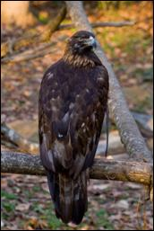
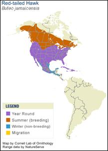

Our National Symbol
You might just occasionally see one of these magnificent birds in the wild right in Clarke County! You're most likely to see them while on the river or at the Botanical Gardens. You can learn more than the casual observer about our Bald Eagles by clicking the buttons below...
Taxonomy
| Order |
Accipitriformes |
| Family |
Accipitridae |
| Genus |
Buteo |
| Species |
jamaicensis |
Diet
- In the wild, red tailed hawks eat a variety of small mammals and birds, but will also eat snakes, lizards and frogs.
- At Bear Hollow, they receive a rotation of mice, quail and chicks.
Range and Habitat

- Red tailed hawks live throughout North America. They favor interrupted landscapes – areas that have a mix of trees, open areas and water.
- They do not like thick forests, nor are they found in extremely cold places.
- In Georgia, they can be found throughout the entire state in all of the different habitats.
Physical Features
- Length of the body is between 18 and 26 inches. Red tailed hawks typically weigh about two to three and a half pounds. Females tend to be a bit larger than the males.
- Wingspan is just shy of five feet.
- The body is brownish on top, with a lighter colored belly. Usually darker spots and speckling and a band across the chest are present.
- The tail is a smooth brick red color. The legs and feet are bright yellow.
Life Span
- Red tailed hawks can live anywhere from 10 to 21 years. There doesn’t seem to be much difference in the wild or in captivity.
Reproduction
- The nest is big and bulky being composed of sticks and dried plant material. Often it is lined with bark fibers, pine needles or corn husks.
- One to three eggs are laid in March or April. The young hatch after about 30 days and are ready to leave the nest approximately 45 days after hatching.
Social Behavior
- They hunt from an elevated perch site and swoop down and grab their prey.
- Red tails are monogamous and will stay with the same mate for life.
Conservation
- A species of little conservation concern; however, they are completely protected by both state and federal laws as birds of prey.
- Very numerous and commonly seen. Population estimates place them at over 1 million birds in the United States alone.
Interpretive Information
- Generally shy birds that tend to fly rather than defend themselves or their nest.
- Its high piercing scream is the one that is used in movies to portray eagles and, to a lesser extent, vultures.
Bear Hollow’s Red-Tailed Hawk
- Male: Ohoopee
- Wild born in the Spring of 2002.
- Injured as a juvenile.
- Rehabilitated by a vet in Lithonia and arrived at Bear Hollow in 2003.
Credits and References
- Photo © Wade Sheldon
- General research by Sherrie Hines